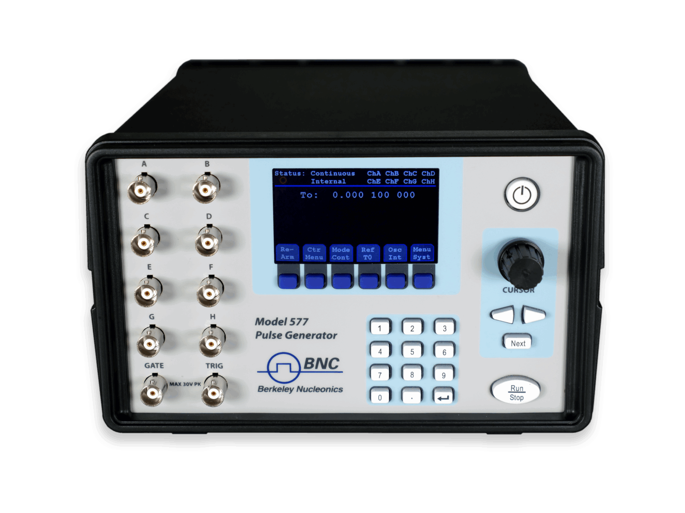

1963
Established
Best in class instrumentation, software, and support for industrial, research, academic, and defense users.
Femtosecond timing to 10,000 Volt pulses. Identification of nuclear isotopes in seconds to exotic crystal materials for space physics. Deep memory high voltage ARBs to fast switching Vector Signal Generators. Let's address your most demanding applications, with delivery times and support you haven't seen before.

Precision timing from femtoseconds to amperes.
What sets us apart? How far every line reaches, and how fast we move when you call. The same generator that emulates a radar return signal drives qubit control. The same crystal that screens a shipping container serves a physics beamline. One catalog, high-performance products, engineered to cross domains.
Provide some application details and we will point you to the right instrument, the right configuration, and a quote you can act on.